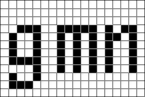
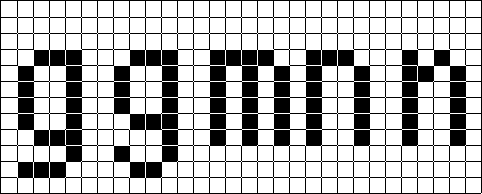

Not from me. UW ttyp0 has a large number of configuration options, but that is possible only if the final files are compiled from the source. With precompiled versions, this flexibility would be lost.
On some systems, pcf is not supported anymore, so that otb is the only choice. On systems that support both font formats, pick one, try it, and if you notice any display problems (wrong spacing, misplaced accents, etc., see below) try the other one. The choice may depend on your terminal program or editor; it seems that some of these programs have quirks that manifest themselves only with one of the font formats, whereas the other one is not affected.
In theory, otb is supposed to support bitmaps with different sizes within one font file; in practice there are significant problems, see for instance https://bugs.gentoo.org/728308#c5 or https://gitlab.gnome.org/GNOME/pango/-/issues/477. Opentype collections (otc) might be better suited for that purpose.
As far as I know, there are packages for Alpine, Arch, Gentoo, NixOS, openSUSE, and SourceMage Linux, and for FreeBSD, NetBSD, and OpenBSD. If you are familiar with packaging and if you'd like to prepare such a port for another system or distribution, drop me a note.
VARIANTS.dat and
TARGETS*.dat?
These files can be edited using any text editor, for example emacs, vim, gedit, kate, nano, or notepad. Do not use a word processor, such as LibreOffice Writer or Microsoft Word.
VARIANTS.dat and TARGETS*.dat,
but now I get syntax error messages when I run make.
The directory backup-config contains backup copies for
VARIANTS.dat and for all the TARGETS*.dat files.
Copy them to the main directory and try again.
The framebuffer console is a part of the Linux kernel, and prior to kernel version 6.9, it accepted only fonts with a maximal size of 32 x 16 pixels. You may have to wait until your Linux distribution switches to version 6.9, where this restriction has been removed.
Edit TARGETS.dat and TARGETS_BDF.dat
to get bdf fonts, then type
make. The compiled bdf fonts are stored in genbdf.
make. What can I do?
That means that you are not using anything Unix-like, right? For MS Windows, you might use Cygwin. Alternatively, try this:
perl bin\bdfmangle bdf\t0-12.bdf VARIANTS.dat mgl\unicode.mgl > genbdf\t0-12-uni.bdf
perl bin\bdfmangle bdf\t0-12b.bdf VARIANTS.dat mgl\unicode.mgl > genbdf\t0-12b-uni.bdf
perl bin\bdfmangle bdf\t0-14.bdf VARIANTS.dat mgl\unicode.mgl > genbdf\t0-14-uni.bdf
perl bin\bdfmangle bdf\t0-14b.bdf VARIANTS.dat mgl\unicode.mgl > genbdf\t0-14b-uni.bdf
...
perl bin\bdfmangle bdf\t0-40.bdf VARIANTS.dat mgl\unicode.mgl > genbdf\t0-40-uni.bdf
perl bin\bdfmangle bdf\t0-40b.bdf VARIANTS.dat mgl\unicode.mgl > genbdf\t0-40b-uni.bdf
This should at least give you the Unicode bdf versions of the even-sized fonts. For the odd-sized ones, it's unfortunately more complicated, you need something like
perl bin\mkshallow bdf\t0-12.bdf > za
copy /b za + bdf\t0-11.bdf zb
perl bin\bdfmangle zb VARIANTS.dat mgl\unicode.mgl > genbdf\t0-11-uni.bdf
and analogously for the other sizes and styles. (Disclaimer: This is untested. I don't use MS Windows.)
There are free tools to convert bdf into other formats (e.g., fontforge, bdftofon). UW ttyp0 is free software: you may convert it to any font format you like – but you'll have to figure out yourself how to do it. My own experience with these tools is close to zero.
Unfortunately, the MS Windows bitmap font formats have a hard-coded size limit: All character codes in a .fnt must be in the range from 0 to 255, so it only works for 8-bit code pages. A .fon file is essentially a collection of .fnt files, so it has the same restriction. If you want to use UW ttyp0 with Unicode encoding under MS Windows, you must convert it to a bitmap-only Truetype font. That should be possible in principle, but it seems to require some insider knowledge. (I tried it myself using fontforge, but without success.)
You must run the installation routine first. It will convert the source bdf files (in the bdf directory) to bdf files that use a standard encoding such as Unicode (in the genbdf directory). Afterwards you can convert the latter to the desired font format. The source bdf files themselves use a proprietary encoding that is neither documented nor guaranteed to be stable. These files are supposed to be used for exactly two things, namely (1) font editing and (2) conversion to a proper bdf font using the installation routine. Do not use them for anything else.
Neither the Unicode order of glyphs nor the standard Postscript names are particularly well-suited for font design. As a designer one would like to have something more systematic, for instance all glyphs that share some element should have related names and should come one after another in the font file. UW ttyp0 uses the bdfmangle utility to convert the source bdf files into Unicode (or any other) encoding. If you have an application that really cares about Postscript names (most programs using pcf fonts don't care), you can use fontforge to change the names.
You have tried to use the source bdf files in the distribution
directly, rather than following the steps described in INSTALL.
That does not work, sorry. The source bdf files use a proprietary encoding
and have to be converted into a standard format during the
installation process.
Depending on the terminal program,
this problem may concern only one font format (pcf or otb);
if your system supports both pcf and otb, changing the font format
may help.
If otb fonts are affected, it may also be
useful to install the latest version of
fonttosfnt and to recompile the otb fonts.
(Earlier versions of fonttosfnt had a bug that resulted in spacing
problems in the generated otb fonts. I hope that these bugs have
been fixed completely by now.)
To test whether characters are rendered as intended
have a look at doc/CheckRendering.txt.
UW ttyp0 is a bdf font and the bdf format does not provide means for
proper positioning of combining characters. Consequently, terminal
programs like xterm must handle all combinations of letters and
diacritical marks for which no precomposed glyphs are available by
naive overprinting. The results are obviously not optimal. If you
use a language in which combining accents are often put on top of
lowercase letters with ascenders or uppercase letters,
VARIANTS.dat
offers an option to use raised accents (that are less likely to
collide with the base letter).
Sadly, some terminal programs do not even get the naive overprinting
right. For instance, under Debian Linux 11, KDE konsole often
does not put the floating accent on the current character, but rather
on the following one, or one row higher, or one row lower than the
current one. On the other hand, konsole is actually better than xterm
in displaying Thai text, since it makes use of the contextual variants
in the Private Use Area, whereas xterm ignores the contextual variants.
Sometimes the problems concern only one font format (pcf or otb);
if your system supports both pcf and otb, changing the font format may help.
To test whether characters are rendered as intended
have a look at doc/CheckRendering.txt.
UW ttyp0 contains a few characters that were added to Unicode rather recently (Latin small S with diagonal stroke was added in Unicode 16.0.0 in September 2024), characters that will be added in the next version (superscript capital S will be added in Unicode 17.0.0 scheduled for September 2025), and even a few characters that are not yet contained in Unicode but that are likely to be added in the future (Latin subscript small Z has been proposed for addition but has not been accepted yet). The current version of your terminal program or editor may not yet support them.
Fonts for the Linux console cannot contain more than 512 glyphs. In order to cover as many languages as possible with a limited number of glyphs, these fonts represent characters with the same or a very similar appearance by the same glyph. That means, for instance, that the Greek Η (Eta), the Cyrillic Н (En) and the Latin H share the same glyph, but also, that the empty set character ∅ may look like the Danish Ø (O with stroke), or that the Yen character ¥ (Y with double horizontal stroke) may look like the Kazakh Cyrillic character Ұ (Y with single horizontal stroke) in some fonts. Furthermore, characters that are not supported by some font may be replaced by their “closest relatives”: If a particular console font does not contain a short rightwards double arrow ⇒ or a long rightwards single arrow ⟶, then showing a short rightwards single arrow → instead is certainly not optimal, but it is typically more useful than showing a space, a box, or a question mark.
The FreeBSD syscons console supports only fonts with a width of 8 pixels. The 14px versions of UW ttyp0 are originally 7 pixels wide; to be used with syscons, they must be padded to 8 pixels.
If you have installed both the Unicode version of UW ttyp0 and some 8-bit character set(s), it may happen that the terminal program picks one of the 8-bit versions instead of the Unicode version and then takes all the remaining glyphs from some fallback font. In this case, it may help to delete all the 8-bit versions of UW ttyp0 from the installation directory and to keep only the Unicode version.
The odd sizes (6x11, 7x13, 8x15, 9x17) are generated mostly automatically from the corresponding even ones (6x12, 7x14, 8x16, 9x18) using the mkshallow script. The source bdf files for these fonts, say bdf/t0-13.bdf, contain only those glyphs for which the automatic conversion from bdf/t0-14.bdf might fail. Note that this height reduction does not work well for certain scripts, in particular Georgian, Armenian, Thai, and pointed Hebrew. Use the even-sized versions instead.
That's very unlikely. A 6x11 matrix is already too small for something like Thai, anything below that would be ridiculous. Above 18x40, I'd recommend to use outline fonts. (The larger sizes have the advantage that hinting in an outline font becomes less important; on the other hand designing a bitmap font becomes more and more tedious).
In a bitmap font, italics work only (in as aesthetically acceptable way) if certain relationships between the character height, the character width, the stroke width and the inter-character space are satisfied. For 8x16, 14x30, and 18x40 it works, for 9x18 it works at a pinch, for the other sizes it doesn't. Bold italics are even worse. Sorry.
No.
Yes. Here is an example. Let's say you want to replace parentheses and square and curly brackets in the 8x16 font by their bold versions.
TARGETS.dat and
generate the Unicode bdf files for the regular and the bold 8x16
font using make. The files are named genbdf/t0-16-uni.bdf and
genbdf/t0-16b-uni.bdf.
replace.mgl with the following content:
PUT PParenL
PUT PParenR
PUT PSquareBrackL
PUT PSquareBrackR
PUT PCurlyBrackL
PUT PCurlyBrackR
The names of the characters can be found in doc/Charset.
Depending on which characters you want to replace, you can also grep the
appropriate lines from mgl/unicode.mgl; for instance
$ grep 'PUT Gk' mgl/unicode.mgl > replace.mgl
yields a replacement file for all Greek letters.
$ perl bin/bdfmangle genbdf/t0-16b-uni.bdf replace.mgl > tmp-16.bdf
$ cat genbdf/t0-16-uni.bdf tmp-16.bdf | perl bin/bdfmangle - mgl/unicode.mgl > new-16.bdf
$ mv new-16.bdf genbdf/t0-16-uni.bdf
make to generate and install the files in the desired font
formats:
$ make
# make install
Note that you can only merge fonts with the same dimensions. Combining
characters from, say, the 8x16 and the 9x18 font will not work.
I started to work on the 8x15 size in 1992 because I was dissatisfied with the ugly fonts that came with the X Window system. The first version of (the ASCII part of) UW ttyp0 8x15 was essentially a condensed version of misc-fixed 9x15 without the quirks of misc-fixed 9x15. Some characters still show that heritage. The dimensions of the 7x13 size came from the Lucida Sans Typewriter 7x13 bitmaps, and the dimensions of most other sizes followed suit. Many of the ASCII characters are very much inspired by Letter Gothic (except for “i” and “l”, which have bottom serifs, following Courier).
What looks good or not in a low-resolution bitmap font depends highly
on whether the font is read from a “small” distance or
from a “large” distance. The angular shapes of the
lowercase “g”, “m”, and “n”
in UW ttyp0 regular 12px
look rather unnatural if the viewing distance is so small that
individual pixels are discernible:

When the viewing distance gets
large enough, however, the lack of curves is no longer noticeable, so
that the letters appear to have the standard shapes. On the other hand,
when the shapes are made more curvy (take a font editor and try it
yourself!), they look better at a small distance, but as soon as the
viewing distance gets larger,
“m” and “n”
appear to be unbalanced,
and the hook of “g” is either too close to the bowl,
or the bowl looks too small compared to “b”,
“d”, “p”, or “q”.

You just can't have both at the same time. UW ttyp0 is
designed for a sufficiently large viewing distance.
VARIANTS.dat.
Why? In Russian italic fonts, “в” is usually an x-height letter
without ascender.
If the letter “в/в” in a low resolution italic bitmap font is designed without ascender, it differs from the letter “е/е” only by one or two pixels, and that may be too confusing. The ascender helps to avoid that ambiguity. (In the 30px and 40px italic fonts, the visual difference is large enough, therefore “в” does not have an ascender.)
No, it doesn't. Unicode is a character set standard, not a glyph standard. Whatever it says about glyphs is, quite explicitly, not normative. A font that represents the entire Latin alphabet using German blackletter does not violate the Unicode standard. A font that represents all lowercase letters by uppercase glyphs and uses the same glyph for U and V (following ancient tradition: SENATVS POPVLVSQVE ROMANVS) does not violate the Unicode standard. A font in which U+0027 and U+0060 are represented by slanted and curly glyphs does not violate the Unicode standard either. It's not a bug; it's a conscious design decision.
In fact, what Unicode really says about apostrophe glyphs is the following (Unicode 6.1.0, Ch. 6, Section “Apostrophes”):
When text is set, U+2019 right single quotation mark is preferred as apostrophe, but only U+0027 is present on keyboards. Word processors commonly offer a facility for automatically converting the U+0027 apostrophe to a contextually selected curly quotation glyph. In these systems, a U+0027 in the data stream is always represented as a straight vertical line and can never represent a curly apostrophe or a right quotation mark.
Note that, for typical applications of UW ttyp0, the assumption above does not hold: No sane person uses a monospaced low-resolution bitmap font like UW ttyp0 for wisiwyg typesetting in a word processor. Anyhow, for somebody who uses proper Unicode quotes (U+2018, U+2019) in a natural language text, the appearance of U+0027 doesn't matter, as long as it can be distinguished from U+2018 and U+2019. (In UW ttyp0, U+0027 and U+0060 are curly and slanted, whereas U+2018 and U+2019 are curly and unslanted.)
On the other hand, the appearance of U+0027 does matter for people who type or read natural language text and who have to deal with data in some 8-bit character set. And for them, a directed curly glyph for U+0027 looks right in some contexts (if used as an apostrophe or as a closing quotation mark), and wrong in some other contexts (if used as an opening quotation mark), but an anorexic vertical stroke looks wrong all the time.
Some people claim that a neutral, vertical glyph is more appropriate
for programming. It seems that that the inventors and developers of
Ada 95, C, C++, Common Lisp, Eiffel, GNU Emacs, Java, Perl, Smalltalk,
the Bourne shell, and TeX did not share this opinion. At least, none
of them used a neutral glyph in their language descriptions (Taft and
Duff 1997, Kernighan and Ritchie 1988, Stroustrup 1991/1997, Steele
1990, Meyer 1992, Stallman 1997, Arnold and Gosling 1997, Wall et al.
1991/1996, Goldberg and Robson 1989, Bourne 1983, Knuth 1986). So,
it's at most a matter of taste. If you don't like the default, get the
source, edit VARIANTS.dat, and type make.
Probably it's a no-break space, U+00A0. In word processing, U+00A0
represents a space at a position where no line-breaks are allowed.
Usually it is displayed like a regular space. In programming, however,
confusing regular spaces and no-break spaces in a string constant or
in some data can lead to nasty bugs, so it's good to be able to
distinguish between the two characters. If you prefer a normal space
glyph or a visible space that doesn't stick out so much, get the
source, edit VARIANTS.dat, and type make.
These glyphs are already present in UW ttyp0. Get the source, edit
VARIANTS.dat, and type make.
Frankly, I don't like to impose my personal taste on other people, but if I can't avoid imposing some personal taste on others, I rather impose my own one.
Using italics is uncommon for Hebrew typesetting, so italics are replaced by semi-bold. Mathematical operators are never italicized in mathematical texts, so these characters are just copied from the upright fonts; the same applies to dingbats and line graphics.
There any many possible reasons: Because X or Y does not fit reasonably well into a low resolution monospace bitmap font. Because the number of people who need X or Y seems to be extremely small. Because designing X or Y is an awful lot of work. Because I am not sufficiently familiar with the typographic traditions of Y (and note that designing a monospace bitmap font for some script does not only require that one is familiar with the usual appearance of the characters of that script, but also that one knows which distortions (that are necessary to squeeze characters into the pixel grid) are acceptable to native speakers).
Again, there is a long list of possible reasons: Because X is supposed to cover a particular geographical region and language Y is commonly spoken in that region, but Z is not. Because many speakers of another language supported by X are immigrants or members of ethnic minorities who use also language Y regularly, but not Z. Because language Y has many (native or non-native) speakers, whereas very few people use language Z. Because almost all the letters that are used for language Y are also used for other languages covered by X, whereas Z uses lots of letters that are used nowhere else.
It is true that one needs only a small number of 512 glyph codesets to cover all those languages individually (about 15 codesets would probably be sufficient). But the assumption that users need only the characters of just one language does not hold in general. It's not only immigrants and members of ethnic minorities who communicate regularly in two or more languages. Even monolingual people encounter all kinds of accented letters in the names of their colleagues at work, in the names of the players in their favorite soccer team, or in the entries of their music play list. The problem is exacerbated, if they also need math characters, CP437 graphics, or Powerline icons. To cater for those needs, a much larger number of codesets is necessary, even if one restricts oneself to somewhat plausible combinations of languages.
Because I don't want to add more and more encodings that nobody uses anymore, and because I was not aware of the fact that XYZ encoding is still in use. Just drop me a note. It is very easy to add a couple of further 256-glyph codesets.
The Interactive Codeset Selector only asks for languages that are supported by some but not all Linux console codesets that are still available. For example, suppose that you have already selected Icelandic. Some of the console codesets that support Icelandic support also Czech, while others don't, therefore the Codeset Selector asks you whether you are interested in support for Czech or not. On the other hand, you are not asked whether you want support for Danish – that would be pointless, since all console codesets that support Icelandic also support Danish. Similarly, you are not asked whether you want support for Tajik – that would be pointless as well, since there are no console codesets that support both Icelandic and Tajik.
No. But one should make it easy to generate them on the fly if users ever need them.
Yes. It's actually quite easy. Here is an example. Let's say you want to create a 256-glyph codeset called MyC that looks mostly like the WET codeset, except that the Icelandic characters Eth and Thorn (Ð, ð, Þ, þ) are replaced by the card suit symbols ♠, ♣, ♥, and ♦.
mgl/conslinux-256/WET.mgl to
mgl/conslinux-256/MyC.mgl.
mgl/conslinux-256/MyC.mgl using a text editor.
Delete the four commands
PUT LtCapEth
PUT LtCapThorn
PUT LtSmlEth
PUT LtSmlThorn
and add the four commands
PUT DSuitSpadeB
PUT DSuitClubB
PUT DSuitHeartB
PUT DSuitDiamondB
anywhere in the file (the order does not matter).
The glyph names can be found in doc/Charset.
Note that the total number of PUT commands must remain
unchanged
and keep in mind that several characters may share the same glyph:
If you delete the Greek capital Gamma from a codeset,
you will simultaneously delete the Cyrillic capital Ghe,
and if you delete the Cyrillic small Ka, you will simultaneously delete
the Greek small Kappa.
Makefile.in contains a
section named “non-unicode bdf fonts (Linux console fonts with
shared glyphs, 256 and 512 glyphs)”.
In this section you can find a two-line instruction for each
existing codeset, for instance
genbdf/%-LC_WET.bdf : genbdf/%-uni.bdf mgl/conslinux-256/WET.mgl
$(BDFMANGLE) $< mgl/conslinux-256/WET.mgl > $@
for the WET codeset.
Duplicate this instruction and replace the three occurrences of
WET in the second copy by MyC.
Note that
the second line of the instruction must be indented with
a tab, not with spaces!
MyC to the CODESETS_CONS_LINUX
line in TARGETS_CONS_LINUX.dat.
$ ./configure [options]
$ make
# make install
Most likely, there is some discrepancy between what you see and what the operating system assumes. The assumptions of the OS and the application about your character encoding are described by a so-called “locale”. The locale defines, among others, which character codes represent letters, which ones represent other printable characters, and which ones represent non-printable control characters. Changing a font does not automatically change the locale. So, if you use a MS Windows CP1251 font, then the code 0x8A corresponds to the Serbian letter “Љ”, but if your locale still says that you use ISO 8859-1, then the OS and your applications still assume that 0x8A is a non-printable control character. You will have to figure out how to change locales (and for more exotic encodings even how to write locales).
No. For languages for which there are working keyboard layouts, these layouts should continue to work with UW ttyp0. For languages for which there are no working keyboard layouts so far, you will have to create one yourself. Note that keyboard layouts for alphabetical scripts are typically designed with a particular language and physical keyboard in mind, not with a particular font or code page in mind. In fact, a keyboard layout that allows the user to enter every character in, say, one of the 512-glyph Linux console fonts for UW ttyp0 is probably inconvenient to use for most languages it covers.
Yes, but you have to insert the following lines into mgl/unicode.mgl
before running make:
IFUNDEF Flag_ReorderOnly PUTAS DVerCtlBranch DVerCtlBranchOldpl 0x2B60
IFUNDEF Flag_ReorderOnly PUTAS CtlLN CtlLNOldpl 0x2B61
IFUNDEF Flag_ReorderOnly PUTAS LtCapF LtCapFOldpl 0x2B62
IFUNDEF Flag_ReorderOnly PUTAS LtCapT LtCapTOldpl 0x2B63
IFUNDEF Flag_ReorderOnly PUTAS DPadlockCl DPadlockClOldpl 0x2B64
IFUNDEF Flag_ReorderOnly PUTAS GPlSepArrowRB GPlSepArrowRBOldpl 0x2B80
IFUNDEF Flag_ReorderOnly PUTAS GPlSepArrowR GPlSepArrowROldpl 0x2B81
IFUNDEF Flag_ReorderOnly PUTAS GPlSepArrowLB GPlSepArrowLBOldpl 0x2B82
IFUNDEF Flag_ReorderOnly PUTAS GPlSepArrowL GPlSepArrowLOldpl 0x2B83
Most dingbats do not fit well into a 6x12 bitmap, and many dingbats
do not fit well into any monospaced font. So the dingbat repertoire
of UW ttyp0 is somewhat limited, and this is unlikely to change.
Please have a look at doc/Charset to see what's available and
edit the tmux-powerline code to use some alternative glyphs.
Yes. As long as the name change requirement in the ttyp0 license is satisfied, the ttyp0 license behaves like a standard BSD license: You may combine UW ttyp0 with other software, free or non-free, you just have to include the ttyp0 license in the documentation.
UW ttyp0 is not a full Unicode font, and it's not going to become one. So users may want to merge UW ttyp0 with some other font that provides the required glyphs for, say, Japanese, Ethiopic, or Cherokee. I don't want to prevent people from doing that, no matter what the license of the other font is (even if its non-free). That rules out GPL and SIL OFL.
The only item that distinguishes the ttyp0 license from a plain BSD or MIT license is the name change requirement. While I don't mind if people modify UW ttyp0 in any way they like, I do mind if they publish an “artistically modified” version under a name that creates the impression that it's the original thing, or that I am still reponsible for the result. So the names “ttyp0” (without any foundry prefix) and “UW anything” are reserved. Publishing the derived font under the name “FrankSmith ttyp0” or “MyNuWeirdFont” is fine with me, provided that the copyright notice states who is responsible for the modification (not me!), and provided that the use of my work is acknowledged.
“Artistically modified” means "modified in such a way that the
resulting font is displayed differently from the original ones".
If you add new glyphs or edit the existing ones using a font editor,
that's an artistic modification. On the other hand, if you edit
VARIANTS.dat as indicated,
convert UW ttyp0 to another character set
(without adding new glyphs), port the installation scripts to another
operating system and/or convert the font verbatim from bdf to another
font format, these modifications don't change the original bitmaps, so
they are not artistic ones.
“UW” are my initials. For the “ttyp0” part, we have to go back in
history: The UW ttyp0 fonts are primarily used in terminal emulators,
such as xterm, rxvt, or konsole. When the Unix operating system was
developed in the early 1970s, the standard computer input device was
the teletype or teleprinter, a combination of a keyboard and a printer
that was originally developed for telegraphy. In the Unix file system,
the teletypes connected to the computer appeared for instance as devices
/dev/tty1, /dev/tty2, and so on.
The device names were kept when teletypes
were replaced by CRT terminals, such as the VT100. The terminal
emulators that we have today in graphic user interfaces make use of
so-called “pseudo terminals” or “pseudo ttys”: devices that look like
oldfashioned VT100-like hardware terminals from the application side
but are implemented in software. Depending on the OS variant, they
are either numbered /dev/ttyp0, /dev/ttyp1, ...,
or /dev/pts/0, /dev/pts/1, ..., and so on.
So “ttyp0” is (or used to be) the name of
the first pseudo terminal in a Unix-like operating system. And of
course, it is also a pun on “typo”, as in “typography”.
“tee tee why pee oh” or “typo”. Choose one.
Yes, sure (provided that I consider them as bugs myself). Drop me a note if you detect anything (from glyph design errors to mistakes in the documentation).
A few individual characters: perhaps, if I believe that there is a real need, if I know how to design the glyphs, if they fit into a monospaced bitmap font, and if I have spare time. New scripts: probably not.
No.
I am not responsible for your operating system, Linux distribution, font conversion program, desktop system, editor, or terminal emulator program, and probably I am not even familiar with it. So the answer is: no. (Usually it's helpful to look for “bitmap font” and the name of your OS/distro/application in your favorite search engine.)
Yes, if the subject line includes the string “ttyp0”. E-mail messages from unknowns with non-sensical subjects such as “URGENT REQUEST” or “Question” or “Dear Mr. Waldmann” or “” go straight to my spam folder.
Uwe Waldmann <uwe@mpi-inf.mpg.de>, 2025-09-08.